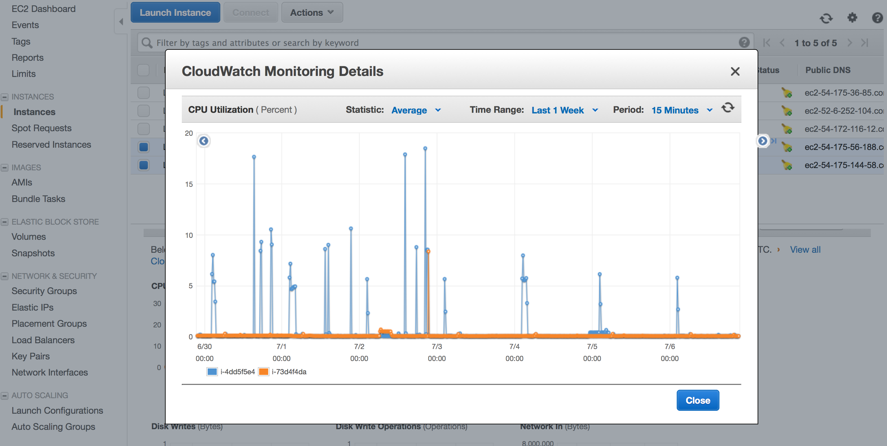

Amazon Web Services
We utilize Vagrant and Chef to automate the environment set up. Each node in the environment (DEV, QA, CI) is deployed to an EC2 instance, based on pre-configured Amazon Machine Images (AMIs).
Authentication
Use AWS credentials to log in to the nodes below.
Dev
- Name: LABEL-DEV
- App URL: http://ec2-54-175-56-188.compute-1.amazonaws.com:8080/LABEL/
- Notes: Refreshes nightly or upon a successful CI build: label-unit > label-integration > label-functional.
QA
- Name: LABEL-QA
- App URL: http://ec2-54-175-144-58.compute-1.amazonaws.com:8080/LABEL/
- Notes: Refreshes on-demand from a Git tag.
Continuous Integration (CI)
We utilize Jenkins in our CI environment to run unit, integration, and functional test cases, as well as code quality checks. It is also used to automate deployment of our DEV and QA/UAT environments.
- Name: LABEL-CI-JENKINS
- App URL: http://ec2-54-172-116-12.compute-1.amazonaws.com:8080/
- Notes: Developers use their GitHub username/password to log in.
- Name: LABEL-CI-LINUX
- Private IP: 172.31.31.253
- Public IP: 54.175.36.85
- Notes: Managed by LABEL-CI-JENKINS
- Name: LABEL-CI-WINDOWS
- Private IP: 172.31.63.203
- Public IP: 52.6.252.104
- Notes: Managed by LABEL-CI-JENKINS
Continuous Monitoring
We utilize AWS CloudWatch for continuous monitoring.

{kind=link}